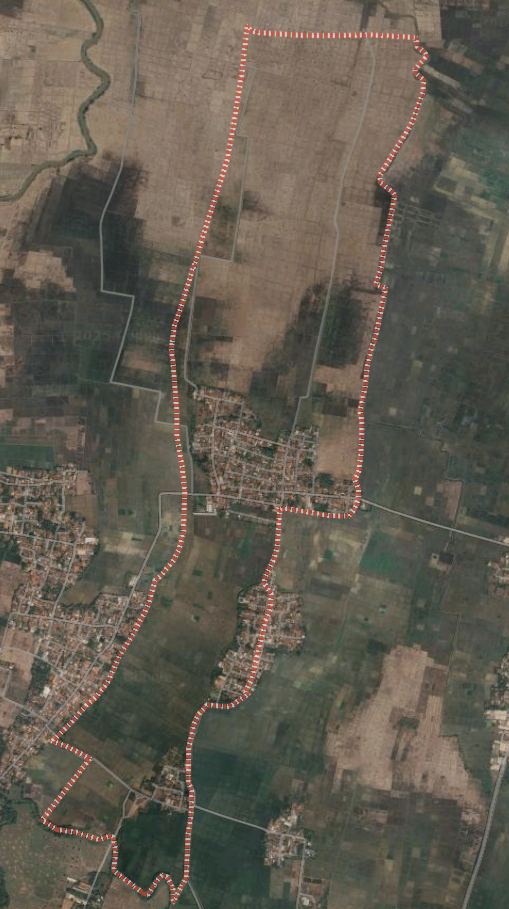

Desa Pulosari merupakan salah satu desa yang terletak di Kecamatan Talagasari, Kabupaten Karawang, Provinsi Jawa Barat. Desa ini dikenal dengan suasana pedesaan yang asri, lingkungan yang ramah, serta masyarakat yang menjunjung tinggi nilai gotong royong dan kearifan lokal.
Sebagai bagian dari Kabupaten Karawang, Desa Pulosari memiliki potensi di bidang pertanian, peternakan, dan kerajinan tangan yang menjadi sumber penghidupan sebagian besar warganya. Selain itu, desa ini juga aktif dalam menjaga tradisi dan budaya setempat yang menjadi warisan turun-temurun.
Pemerintah Desa Pulosari berkomitmen untuk memberikan pelayanan terbaik kepada masyarakat, meningkatkan kualitas hidup warga, serta membangun desa yang transparan, modern, dan berdaya saing. Melalui website ini, Desa Pulosari ingin memberikan informasi yang mudah diakses dan selalu terupdate bagi seluruh warga desa maupun pengunjung dari luar.
Dengan adanya website ini, diharapkan masyarakat dapat lebih mudah mendapatkan informasi terkait layanan publik, berita desa, dan berbagai kegiatan yang ada di Desa Pulosari. Kami juga mengajak seluruh warga untuk berpartisipasi aktif dalam pembangunan desa demi kemajuan bersama.
Untuk informasi lebih lanjut, silakan kunjungi halaman Profil Desa atau Layanan Publik.
Visi kami adalah menciptakan Desa Pulosari yang mandiri, sejahtera, dan berbudaya. Misi kami meliputi peningkatan kualitas layanan publik, pengembangan potensi lokal, serta pelestarian budaya dan lingkungan.
Misi kami adalah meningkatkan partisipasi masyarakat dalam pembangunan desa, menyediakan layanan publik yang transparan dan akuntabel, serta memajukan ekonomi lokal melalui pemberdayaan masyarakat dan pengembangan potensi desa.

Desa Pulosari merupakan salah satu desa di Kecamatan Talagasari, Kabupaten Karawang dengan luas wilayah kurang lebih 245 hektar. Desa ini terbagi menjadi 3 dusun, 6 Rukun Warga (RW), dan 20 Rukun Tetangga (RT).
Berdasarkan data terbaru, jumlah penduduk Desa Pulosari mencapai sekitar 3.000 jiwa yang terdiri dari 1.500 laki-laki dan 1.500 perempuan. Sebagian besar masyarakat berprofesi sebagai petani, peternak, pedagang kecil, dan sebagian lainnya bekerja di sektor informal.
Selain memiliki potensi besar di bidang pertanian, desa ini juga dikenal dengan keindahan sawah terasering yang asri, serta lingkungan yang masih hijau dan alami. Hal ini menjadi potensi pengembangan ekowisata dan wisata edukasi di masa mendatang.
Dengan komposisi usia yang didominasi oleh usia produktif, Desa Pulosari memiliki sumber daya manusia yang potensial untuk mendukung pembangunan desa secara berkelanjutan.
Berita terbaru akan ditampilkan di sini. Pastikan untuk selalu mengunjungi website kami untuk mendapatkan informasi terkini tentang Desa Pulosari.
Lihat Berita Lainnya